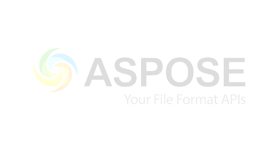

Created with an evaluation copy of Aspose.Words. To remove all limitations, you can use Free Temporary License https://products.aspose.com/words/temporary-license/
The Future of Renewable Energy
Renewable energy is gaining momentum around the world as we strive to combat climate change.
[Image: Placeholder for article image]
This is a brief introduction to the topic discussed in this article. We will cover the main points and provide insights into recent developments.
In conclusion, the topic discussed in this article is highly relevant and affects many aspects of our daily lives.
Evaluation Only. Created with Aspose.Words. Copyright 2003-2024 Aspose Pty Ltd.